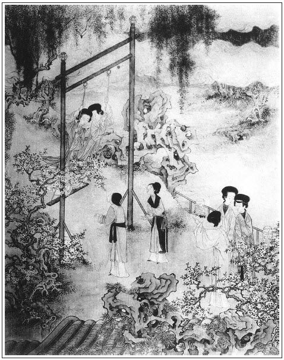

張回此回又是一小關鎖也。夫上文烹茶傳末，已於酒令中各寫身份，可謂一小鎖。而此文又鎖何哉？不知上文芙蓉亭，以及掃雪烹茶，俱不能入春梅在坐，大是費手。故又生一鞦韆，則春梅、蕙蓮皆可與金、瓶、月娘諸人齊肩並立，共佔春風，毫無乘車戴笠之異也。此系作得千秋苦心，今日始為道出，以告天下後世錦繡之子也。
大書吳月娘春晝鞦韆。夫月娘，眾婦人之首也。今當此白日，既無衣食之憂，又無柴米之累，宜首先率領眾妾勤儉宜家，督理女工，是其正道。乃自己作俑為無益之戲，且令女婿手攬畫裙，指親羅襪，以送二妾之畫板。無倫無次，無禮無義，何惑乎敬濟之挾奸賣俏，乘間而入哉！天下壞事，全是自己，不可盡咎他人也。
夫敬濟一入西門家，先是月娘引之入室，得見金蓮。後又是月娘引之入園，得採花須。後又是西門以過實之言放其膽，以托大之意，容其奸。今日月娘又使之送鞦韆，以蕩其心。此時雖有守有志之人，猶難自必其能學柳下惠、魯男子，況夫以浮浪不堪之敬濟哉！又遇一精粗美惡兼收之金蓮哉！宜乎百丑指出矣。
金蓮、瓶兒，西門奪之於武大、花子虛手中也。乃西門慶之之時，不肯少為武大、子虛計。至琴童、竹山，則西門不覺恨入骨髓，欲殺之割之，而心猶未釋然。宋蕙蓮，固蔣聰之婦人也，乃來旺奸之在前，而又借西門之力之財以得之者也。且暗中已討雪娥一節便宜。則今日西門慶為主者固不是，而來旺又不肯少回其意，亦必欲殺欲割西門、金蓮二人而方休。總之人情止知私於已，而不肯忠恕也。若肯忠恕於未謀人之先，則此惡必做作不出；即肯忠恕於已失著之後，猶可改過自修，庶幾免禍患於萬一。若西門一往不返，卒有喪身之禍；來旺一往不返，幾有不保之戚也，噫！讀此書者，於此處當深省之，便可於淫慾世界中語聖賢學問。
寫西門之於雪娥，既察其奸，就該逐之使去，不可令其停留一日，庶足令金蓮、敬濟暗地寒心，而亦處家之正道，即來旺於此亦可少數。乃糊塗一打便休，毫無禮法，宜乎來旺之惡愈熾，而不數日金蓮之鞋已入敬濟之手也。
詞曰：
蹴罷鞦韆，起來整頓纖纖手。露濃花瘦，薄汗輕衣透。見客入來，襪剷金釵溜。和羞走，倚門回首，卻把青梅嗅。
──右調《點絳唇》

話說燈節已過，又早清明將至。西門慶有應伯爵早來邀請，說孫寡嘴作東，邀了郊外耍子去了。
先是吳月娘花園中，紮了一架鞦韆。這日見西門慶不在家，閒中率眾姊妹遊戲，以消春困。先是月娘與孟玉樓打了一回，下來教李嬌兒和潘金蓮打。李嬌兒辭說身體沉重，打不的，卻教李瓶兒和金蓮打。打了一回，玉樓便叫：「六姐過來，我和你兩個打個立鞦韆。」吩咐：「休要笑。」當下兩個玉手挽定彩繩，將身立於畫板之上。月娘卻教蕙蓮、春梅兩個相送。正是：
紅粉面對紅粉面，玉酥肩並玉酥肩。
兩雙玉腕挽復挽，四隻金蓮顛倒顛。
那金蓮在上面笑成一塊。繡旁笑得妙。月娘道：「六姐你在上頭笑不打緊，只怕一時滑倒，不是耍處。」說著，不想那畫板滑，又是高底鞋，跐不牢，只聽得滑浪一聲把金蓮擦下來，繡旁跌得尤妙。早是扶住架子不曾跌著，險些沒把玉樓也拖下來。月娘道：「我說六姐笑的不好，只當跌下來。」繡眉不笑不跌，有何趣味。因望李嬌兒眾人說道：「這打鞦韆，最不該笑。笑多了，一定腿軟了，跌下來。咱在家做女兒時，隔壁周台官家花園中紮著一座鞦韆。也是三月佳節，一日他家周小姐和俺一般三四個女孩兒，都打鞦韆耍子，也是這等笑的不了，把周小姐滑下來，騎在畫板上，把身子喜抓去了。落後嫁與人家，被人家說不是女兒，休逐來家，今後打鞦韆，先要忌笑。」金蓮道：「孟三兒不濟，繡眉金蓮自跌了，轉說孟三兒不濟，妙甚。張夾金蓮怪人，大都如是。等我和李大姐打個立鞦韆。」月娘道：「你兩個仔細打。」卻教玉簫、春梅在旁推送。
才待打時，只見陳敬濟自外來，說道：「你每在這裡打鞦韆哩。」月娘道：「姐夫來的正好，且來替你二位娘送送兒。丫頭每氣力少。」張夾又是月娘開端。這敬濟「老和尚不撞鐘──得不的一聲」，於是撥步撩衣，向前說：張夾先自己撥步撩衣。妙。「等我送二位娘。」先把金蓮裙子帶住，說道：「五娘站牢，兒子送也。」那鞦韆飛在半空中，猶若飛仙相似。李瓶兒見鞦韆起去了，諕的上面怪叫道：「不好了，姐夫你也來送我送兒。」敬濟道：「你老人家到且性急，也等我慢慢兒的打發將來。這裡叫，那裡叫，把兒子手腳都弄慌了。」
於是把李瓶兒裙子掀起，露著他大紅底衣，推了一把。李瓶兒道：「姐夫，慢慢著些！我腿軟了！」敬濟道：「你老人家原來吃不得緊酒。」金蓮又說：「李大姐，把我裙子又兜住了。」兩個打到半中腰裡，都下來了。卻是春梅和西門大姐兩個打了一回。然後，教玉簫和蕙蓮兩個打立鞦韆。這蕙蓮手挽彩繩，身子站的直屢屢的，腳跐定下邊畫板，也不用人推送，那鞦韆飛在半天雲裡，然後忽地飛將下來，端的卻是飛仙一般，甚可人愛。繡旁殊亦可人。月娘看見，對玉樓、李瓶兒說：「你看媳婦子，他倒會打。」這裡月娘眾人打鞦韆不題。
話分兩頭。卻表來旺兒往杭州織造蔡太師生辰衣服回來，押著許多馱垛箱籠船上，先走來家。到門首，下了頭口，收卸了行李，進到後邊。只見雪娥正在堂屋門首，作了揖。那雪娥滿面微笑，繡眉一「揖」便有可疑。一「微」字便有要搬嘴之意。說道：「好呀，你來家了。繡旁喜之之辭。路上風霜，多有辛苦！幾時沒見，吃得黑胖了。」來旺因問：「爹娘在那裡？」雪娥道：「你爹今日被應二眾人，邀去門外耍子去了。你大娘和大姐，都在花園中打鞦韆哩。」來旺兒道：「啊呀，打他則甚？」雪娥便倒了一盞茶與他吃，因問：「媳婦子在灶上，怎的不見？」那雪娥冷笑了一聲，說道：「你的媳婦子，如今還是那時的媳婦兒哩？好不大了！他每日只跟著他娘每伙兒裡下棋，撾子兒，抹牌頑耍。他肯在灶上做活哩！」正說著，小玉走到花園中，報與月娘。月娘自前邊走來，來旺兒向前磕了頭，立在旁邊。問了些路上往回的話，月娘賞了兩瓶酒。吃一回，他媳婦宋蕙蓮來到。月娘道：「也罷，你辛苦了，且往房裡洗洗頭面，歇宿歇宿去。等你爹來，好見你爹回話。」那來旺兒便歸房裡。蕙蓮先付鑰匙開了門，又舀些水與他洗臉攤塵，收拾褡褳去，說道：「賊黑囚，幾時沒見，便吃得這等肥肥的。」又替他換了衣裳，安排飯食與他吃。睡了一覺起來，已是日西時分。
西門慶來家，來旺兒走到跟前參見，說道：「杭州織造蔡太師生辰的尺頭並家中衣服，俱已完備，打成包裹，裝了四箱，搭在官船上來家，只少雇夫過稅。」西門慶滿心歡喜，與了他趕腳銀兩，明日早裝載進城。又賞銀五兩，房中盤纏；又教他管買辦東西。繡旁伏。這來旺兒私已帶了些人事，悄悄送了孫雪娥兩方綾汗巾，兩隻裝花膝褲，四匣杭州粉，二十個胭脂。繡眉雪娥與來旺私情，絕不露一語，只脈脈畫個影子，有意到筆不到之妙。張夾映出前好。雪娥背地告訴來旺兒說：「自從你去了四個月，你媳婦怎的和西門慶勾搭，玉簫怎的做牽頭，金蓮屋裡怎的做窩窠。先在山子底下，落後在屋裡，成日明睡到夜，夜睡到明。與他的衣服、首飾、花翠、銀錢，大包帶在身邊。使小廝在門首買東西，見一日也使二三錢銀子。」來旺道：「怪道箱子裡放著衣服、首飾！我問他，他說娘與他的。」雪娥道：「那娘與他？到是爺與他的哩！」繡旁妙語。這來旺兒遂聽記在心。
到晚夕，吃了幾鍾酒，歸到房中。常言酒發頓腹之言，因開箱子，看見一疋藍緞子，甚是花樣奇異，便問老婆：「是那裡的緞子？誰人與你的？趁上實說。」老婆不知就裡，故意笑著，回道：「怪賊囚，問怎的？此是後邊見我沒個襖兒，與了這疋緞子，放在箱中，沒工夫做。端的誰肯與我？」來旺兒罵道：「賊淫婦！還搗鬼哩！端的是那個與你的？」又問：「這些首飾是那裡的？」婦人道：「呸！怪囚根子，那個沒個娘老子，就是石頭罅剌兒裡迸出來，也有個窩巢兒，為人就沒個親戚六眷？此是我姨娘家借來的釵梳。是誰與我的！」被來旺兒一拳，險不打了一交，繡旁何其狠也。說：「賊淫婦，還說嘴哩！有人親看見你和那沒人倫的豬狗有首尾！張夾然則蔣聰奈何？玉簫丫頭怎的牽頭，送緞子與你，在前邊花園內兩個干，落後吊在潘家那淫婦屋裡明干，成日㒲的不值了。賊淫婦，你還要我手裡吊子曰兒。」那婦人便大哭起來，說道：「賊不逢好死的囚根子！你做甚麼來家打我？我干壞了你甚麼事來？你恁是言不是語，丟塊磚瓦兒也要個下落。是那個嚼舌根的，沒空生有，調唆你來欺負老娘？繡旁自家沒得說，反劈空罵人，妙絕。我老娘不是那沒根基的貨！教人就欺負死，也揀個乾淨地方。你問聲兒，宋家的丫頭，若把腳略趄兒，把『宋』字兒倒過來！你這賊囚根子，得不個風兒就雨兒。萬物也要個實。人教你殺那個人，你就殺那個人？」幾句說的來旺兒不言語了。婦人又道：「這疋藍緞子，越發我和你說了罷，也是去年十一月裡三娘生日，娘見我上穿著紫襖，下邊借了玉簫的裙子穿著，說道：『媳婦子怪剌剌的，甚麼樣子？』才與了我這疋緞子。誰得閒做他？那個是不知道！就纂我恁一遍舌頭。你錯認了老娘，老娘不是個饒人的。明日我咒罵個樣兒與他聽。破著我一條性命，自恁尋不著主兒哩。」繡眉以死嚇人，是淫婦伎倆。來旺兒道：「你既沒此事，繡旁虎頭蛇尾，可笑。平白和人合甚氣？繡旁怕纏出雪娥來。張旁心虛語。快些打鋪我睡。」這婦人一面把鋪伸下，說道：「怪倒路的囚根子，吃了那黃湯，挺你那覺！平白惹老娘罵。」把來旺掠翻在炕上，鼾聲如雷。看官聽說：但凡世上養漢的婆娘，饒他男子漢十八分精細，吃他幾句左話兒右說，十個九個都著了道兒。
正是：
東淨裡磚兒──又臭又硬。
這宋蕙蓮窩盤住來旺兒，過了一宿。到次日，往後邊問玉簫，誰人透露此事，終莫知其所由，只顧海罵。一日，月娘使小玉叫雪娥，一地裡尋不著。走到前邊，只見雪娥從來旺兒房裡出來，只猜和他媳婦說話，不想走到廚下，蕙蓮又在裡面切肉，良久，西門慶前邊陪著喬大戶說話，只為揚州鹽商王四峰，被按撫使送監在獄中，許銀二千兩，央西門慶對蔡太師討人情釋放。剛打發大戶去了，西門慶叫來旺，張旁報應不必至來保欺恩一回矣。來旺從他屋裡跑出來。正是：
雪隱鷺鷥飛始見，柳藏鸚鵡語方知。
以此都知雪娥與來旺兒有尾首。
一日，來旺兒吃醉了，和一般家人小廝在前邊恨罵西門慶，說怎的我不在家，使玉簫丫頭拿一疋藍緞子，在房裡哄我老婆。把他吊在花園奸耍，後來潘金蓮怎的做窩主：「由他，只休要撞到我手裡。我教他白刀子進去，紅刀子出來。好不好，把潘家那淫婦也殺了，也只是個死。你看我說出來做的出來。潘家那淫婦，想著他在家擺死了他漢子武大，他小叔武松來告狀，多虧了誰替他上東京打點，把武松墊發充軍去了？今日兩腳踏住平川路，落得他受用，還挑撥我的老婆養漢。我的仇恨，與他結的有天來大。常言道，一不做，二不休，到跟前再說話。破著一命剮，便把皇帝打！」繡眉此等事雖不得不恨，不得不罵，然雪娥事卻又如何？古今自非紀臣，而往往謗訕朝廷以賈禍者，率此類也。這來旺兒自知路上說話，不知草裡有人，不想被同行家人來興兒聽見。這來興兒在家，西門慶原派他買辦食用撰錢過日，只因與來旺媳婦勾搭，把買辦奪了，卻教來旺兒管領。來興兒就與來旺不睦，聽見發此言語，就悄悄走來潘金蓮房裡告訴。
金蓮正和孟玉樓一處坐的，張夾凡金蓮有事，必寫玉樓在旁。因知予言作襯非謬。只見來興兒掀簾子進來，金蓮便問來興兒：「你來有甚事？你爹今日往誰家吃酒去了？」來興道：「今日俺爹和應二爹往門外送殯去了。適有一件事，告訴老人家，只放在心裡，休說是小的來說。」金蓮道：「你有甚事，只顧說，不妨事！」來興兒道：「別無甚事，叵耐來旺兒，昨日不知那裡吃的醉稀稀的，在前邊大吆小喝，指豬罵狗，罵了一日。又邏著小的廝打，小的走來一邊不理，他對著家中大小，又罵爹和五娘。」潘金蓮就問：「賊囚根子，罵我怎的？」來興說：「小的不敢說。三娘在這裡，也不是別人。那廝說爹怎的打發他不在家，耍了他的老婆，說五娘怎的做窩主，賺他老婆在房裡和爹兩個明睡到夜，夜睡到明。他打下刀子，要殺爹和五娘，白刀子進去，紅刀子出來。又說，五娘那咱在家，毒藥擺殺了親夫，多虧了他上東京去打點，救了五娘一命。說五娘恩將仇報，挑撥他老婆養漢。小的穿青衣抱黑住，先來告訴五娘說聲，早晚休吃那廝暗算。」玉樓聽了，如提在冷水盆內一般，吃了一驚。這金蓮不聽便罷，聽了，粉面通紅，銀牙咬碎，罵道：「這犯死的奴才！我與他往日無冤近日無仇，他主子要了他的老婆，他怎的纏我？我若教這奴才在西門慶家，永不算老婆！怎的我虧他救活了性命？」因吩咐來興兒：「你且去，等你爹來家問你時，你也只照恁般說。」來興兒說：「五娘說那裡話！小的又不賴他，有一句說一句。隨爹怎的問，也只是這等說。」繡旁說得斬釘截鐵。說畢，往前邊去了。
玉樓便問金蓮：「真個他爹和這媳婦子有？」繡旁寫出玉樓無心。金蓮道：「你問那沒廉恥的貨！甚的好老婆，也不枉了教奴才這般挾制了。在人家使過了的奴才淫婦，當初在蔡通判家，和大婆作弊養漢壞了事，才打發出來，嫁了蔣聰。繡旁到此又補出。豈止見過一個漢子兒？有一拿小米數兒，甚麼事兒不知道！賊強人瞞神嚇鬼，使玉簫送緞子兒與他做襖兒穿。一冬裡，我要告訴你，沒告訴你。那一日，大姐姐往喬大戶家吃酒，咱每都不在前邊下棋？只見丫頭說他爹來家，咱每不散了？張夾二「不」字，如畫。落後我走到後邊儀門首，見小玉立在穿廊下，我問他，小玉望著我搖手兒。我剛走到花園前，只見玉簫那狗肉在角門首站立，原來替他觀風。我還不知，教我徑往花園裡走。玉簫攔著我，不教我進去，說爹在裡面。教我罵了兩句。我到疑影和他有些甚麼查子帳，不想走到裡面，他和媳婦子在山洞裡干營生。繡眉敘往事，覺眉目宛如對面。媳婦子見我進去，把臉飛紅的走出來了。他爹見了我，訕訕的，吃我罵了兩句沒廉恥。落後媳婦子走到屋裡，打旋磨跪著我，教我休對他娘說。張夾又補出。落後正月裡，他爹要把淫婦安托在我屋裡過一夜兒，吃我和春梅折了兩句，再幾時容他傍個影兒！賊萬殺的奴才，沒的把我扯在裡頭。好嬌態的奴才淫婦，我肯容他在那屋裡頭弄磣兒？就是我罷了，俺春梅那小肉兒，他也不肯容他。」玉樓道：「嗔道賊臭肉在那裡坐著，見了俺每意意似似，待起不起的，誰知原來背地有這本帳！繡旁想起從前有致。論起來，他爹也不該要他。那裡尋不出老婆來，教奴才在外邊倡揚，甚麼樣子？」金蓮道：「左右的皮靴兒沒番正，你要奴才老婆，奴才暗地裡偷你的小娘子，彼此換著做！賊小婦奴才，千也嘴頭子嚼說人，萬也嚼說，今日打了嘴，也不說的！」繡眉說到雪娥又罵一頓，映出恨心不忘。玉樓向金蓮道：「這樁事，咱對他爹說好，不說好？大姐姐又不管。張夾寫盡月娘之惡。文旁我不知月娘為何惡哉！倘忽那廝真個安心，咱每不言語，他爹又不知道，一時遭了他手怎了？六姐，你還該說說。」張夾寫玉樓真正好人。文旁寫玉樓真正老奸之辣貨也。金蓮道：「我若是饒了這奴才，除非是他㒲出我來。」正是：
平生不作皺眉事，世上應無切齒人。
西門慶至晚來家，只見金蓮在房中雲鬟不整，睡搵香腮，哭的眼壞壞的。繡眉長技。問其所以，遂把來旺兒醉酒發言，要殺主之事訴說一遍：「見有來興兒親自聽見，思想起來，你背地圖他老婆，他便背地要你家小娘子。你的皮靴兒沒番正。那廝殺你便該當，與我何干？連我一例也要殺！趁早不為之計，夜頭早晚，人無後眼，只怕暗遭他毒手。」西門慶因問：「誰和那廝有首尾？」金蓮道：「你休來問我，只問小玉便知。」又說：「這奴才欺負我，不是一遭兒了。說我當初怎的用藥擺殺漢子，你娶了我來，虧他尋人情搭救我性命來。在外邊對人揭條。早是奴沒生下兒沒長下女，若是生下兒女，教賊奴才揭條著好聽？繡眉偏有許多設想，妙舌。敢說：『你家娘當初在家不得地時，也虧我尋人情救了他性命。』恁說在你臉上也無光了！你便沒羞恥，我卻成不的，要這命做甚麼？」西門慶聽了婦人之言，走到前邊，叫將來興兒到無人處，問他始末緣由。這小廝一五一十說了一遍。又走到後邊，摘問了小玉口詞，與金蓮所說無差：委的某日，親眼看見雪娥從來旺兒屋裡出來，他媳婦兒不在屋裡，的有此事。這西門慶心中大怒，把孫雪娥打了一頓，被月娘再三勸了，拘了他頭面衣服，只教他伴著家人媳婦上灶，不許他見人。張夾只此便了。可笑，可笑。此事表過不題。
西門慶在後邊，因使玉簫叫了宋蕙蓮，背地親自問他。繡旁呆甚。這婆娘便道：「啊呀，爹，你老人家沒的說，他是沒有這個話。我就替他賭了大誓。他酒便吃兩鐘，敢恁七個頭八個膽，背地裡罵爹？又吃紂王水土，又說紂王無道！張夾以紂喻之。妙絕。他靠那裡過日子？爹，你不要聽人言語。我且問爹，聽見誰說這個話來？」繡旁反問他要人，妙。那西門慶被婆娘一席話兒，閉口無言。問的急了，說：「是來興兒告訴我說的。」蕙蓮道：「來興兒因爹叫俺這一個買辦，說俺每奪了他的，不得賺些錢使，結下這仇恨兒，平空拿這血口噴他，爹就信了。他有這個欺心的事，我也不饒他。爹你依我，不要教他在家裡，與他幾兩銀子本錢，教他信信脫脫，遠離他鄉，做買賣去。繡旁處法亦善。他出去了，早晚爹和我說句話兒也方便些。」西門慶聽了滿心歡喜，說道：「我的兒，說的是。我有心要叫他上東京，與鹽商王四峰央蔡太師人情，回來，還要押送生辰擔去，只因他才從杭州來家，不好又使他的，打帳叫來保去。既你這樣說，我明日打發他去便了。回來，我教他領一千兩銀子，同主管往杭州販買綢絹絲線做買賣。你意下如何？」老婆心中大喜，說道：「爹若這等才好。」正說著，西門慶見無人，就摟他過來親嘴。婆娘忙遞舌頭在他口裡，兩個咂做一處。婦人道：「爹，你許我編䯼髻，怎的還不替我編？繡旁不放鬆，妙。恁時候不戴到幾時戴？只教我成日戴這頭髮殼子兒？」西門慶道：「不打緊，到明日將八兩銀子，往銀匠家替你拔絲去。」西門慶又道：「怕你大娘問，怎生回答？」婦人道：「不打緊，我自有話打發他，只說問我姨娘家借來戴戴，怕怎的？」當下二人說了一回話，各自分散了。
到了次日，西門慶在廳上坐著，叫過來旺兒來：「你收拾衣服行李，趕明日三月二十八日起身，往東京央蔡太師人情。回來，我還打發你杭州做買賣去。」這來旺心中大喜，繡眉此何足喜，已微有拐銀棄妻之意。張夾已定下騙局矣。應諾下來，回房收拾行李，在外買人事。來興兒打聽得知，就來告報金蓮知道。金蓮打聽西門慶在花園卷棚內，走到那裡，不見西門慶，只見陳敬濟在那裡封禮物。金蓮便道：「你爹在那裡？你封的是甚麼？」敬濟道：「爹剛才在這裡，往大娘那邊兌鹽商王四峰銀子去了。我封的是往東京央蔡太師的禮。」金蓮問：「打發誰去？」敬濟道：「我聽見昨日爹吩咐來旺兒去。」這金蓮才待下台基，往花園那條路上走，正撞見西門慶拿了銀子來。叫到屋裡，問他：「明日打發誰往東京去？」西門慶道：「來旺兒和吳主管二人同去。因有鹽商王四峰一千幹事的銀兩，以此多著兩個去。」婦人道：「隨你心下，我說的話兒你不依，到聽那奴才淫婦一面兒言語。他隨問怎的，只護他的漢子。那奴才有話在先，不是一日兒了。左右破著老婆丟與你，坑了你這銀子，拐的往那頭裡停停脫脫去了，看哥哥兩眼兒空哩。你的白丟了罷了，難為人家一千兩銀子，不怕你不賠他。繡眉雖挑撥，然亦有理。張夾雖妒言，卻亦見到幾分。但不可出之金蓮口中。我說在你心裡，也隨你。老婆無故只是為他。張夾此下一轉，便自己早入地獄矣。不爭你貪他這老婆，你留他在家裡也不好，你就打發他出去做買賣也不好。張夾總欲死之而後快。寫金蓮之惡一至於此。你留他在家裡，早晚沒這些眼防範他。你打發他外邊去，他使了你本錢，頭一件你先說不得他。你若要他這奴才老婆，不如先把奴才打發他離門離戶。常言道：剪草不除根，萌芽依舊生；剪草若除根，萌芽再不生。就是你也不耽心，老婆他也死心塌地。」繡旁二語動人。一席話兒，說得西門慶如醉方醒。正是：
數語撥開君子路，片言提醒夢中人。
文回文禹門云：宋蕙蓮，蟹也，一釋手便橫行無忌。潘金蓮，蠍也，一挨手便掉尾螫人。西門慶，蛆也，無頭無尾，翻上翻下，只知一味亂鑽，仍是毫無知覺，此刻直如傀儡，任人撮弄。閱之無如之何，但責備其妻不能救正，是所謂豺狼當道，轉問狐狸，不揣其本，而齊其末，不清其源，而澄其流者也。「大姐姐不管」一語，玉樓可以言之。論人者，當立腳高處，始可分別皂白。若有偏好偏惡，是先自迷其目。彼尚未見西門慶為何如人也，烏足與論天下事乎？